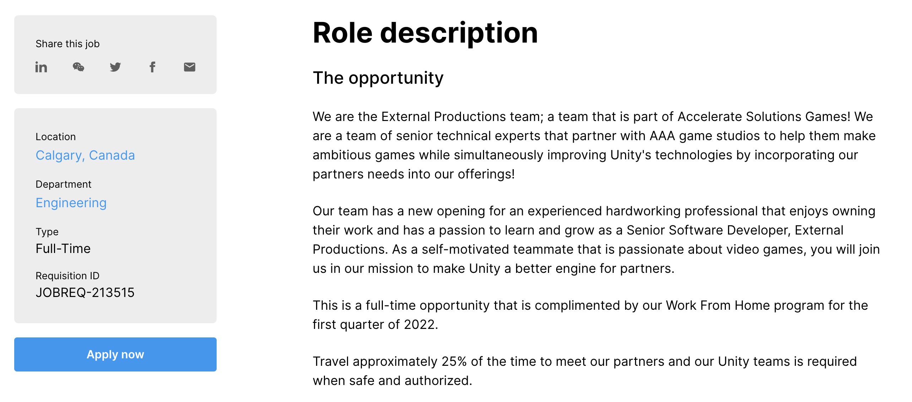
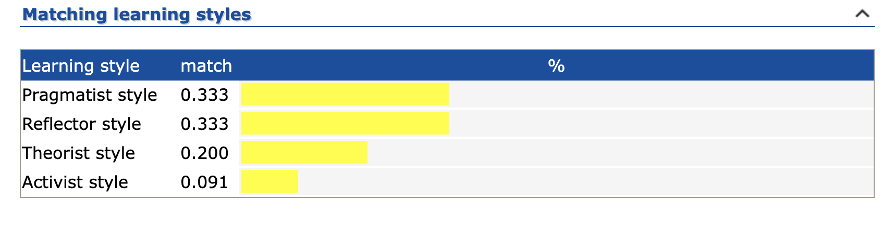

Me
Hi, my name is Elliott, I am 29 years old and I’m from the Sunshine Coast Queensland. I’ve grown up spending most of my time in the outdoors, doing things like surfing, hiking, spearfishing and camping. I’ve spent the last 8 years of my life living in Melbourne working in the hospitality and beer industry, the last two of which I was a beer plumber! Making sure the thirsty people of Melbourne could get a pint full of the good stuff!
Interest in IT
I had my first taste of IT when I was a young child, I would watch my older sibling play video games on consoles such as NES, SNES and PS1. Once I had accidently wiped their save files a one to many times my parents finally got me and my little brother our own set up. This is where the rabbit hole began. Sleepless hours were spent up late playing whatever we could get our hands on, mainly simple platform and racing games, like Crash bandicoot, Spyro, RoadRash etc. Little did I know where gaming was headed, and once it had taken off onto the internet my love for IT and gaming snowballed.
The “WoW” Moment
I think downloading and playing WoW (World of Warcraft) on the home desktop was my first “Omg the internet can do this” moment, and from there IT has never ceased to amaze me. This vast space for people to explore and chat, and share ideas, leaves open such a huge door of opportunity for everybody on the planet. Everything is linked, from our finances, our friends, our music tastes and something new pops up every other day.
Why RMIT?
Making it into my late twenties my attitudes towards life has change a lot, I’ve grown up, and want to do something stable and build a career. Combine that with my ever-evolving interests in the tech world and I ended where I am. I needed a course that was flexible with my lifestyle and my business, and RMIT online seemed like a no brainer. I have a few friends that have done similar courses at RMIT on campus, and they said it was great, and I thought I would give it a crack.
What I Want
Studying a bachelor of IT I expect to learn the fundamentals over a broad spectrum, by jumping in and learning things like programming, web development, AI and more, I hope to gain better understanding on what really interests me and where I should focus my studies and my career goals. I would like to eventually study on campus and have a bit more of a hands-on approach to learning. But that is still a while away yet. The added benefit of networking with my peers and teachers will no doubt help in the long run.
The Ideal Job
At this moment it is probably game/software development that excites me the most about potential career paths. It opens a world of opportunity to delve into my creative side and expand on my skillset. Being part of a team that can help produce a AAA game and bring joy to millions of people around the globe would be mind-blowing.
The Job
This position, although not my dream studio would give me the experience needed to venture into bigger and better things. Joining this team would require developing software and technologies to best meet our partner’s needs. I would not only be building and developing new technologies but maintaining and building-up on already established tech to bring the best potential performance to the table. Personally, I value a good work life balance and with Unity’s “Work From Home” program certainly ticks that box
What I Need
Strong programming skills in C# or C++ and the ability to efficiently develop, profile, debug, and optimizer code in multiple-platform environments is required to be considered for this job. As my experience and skill sets are still taking form this may be out of reach for me for the time being. On completion of my Bachelor, I hope to be proficient enough to step out into the job market and eventually achieve this ideal position.
What I have
Although my technical skills may be sub-par at this stage, I do already have the everyday skills that are required for this job. My years working front of house in a team environment have given me excellent communication skills, not only with my team but with customers and the general public. My ability to work with what I have and to solve problems I have never encountered before will give me a leg up as a potential member of the team.
My Plan
As I work through my degree, I will begin to narrow down what aspects of IT really interest me, and I will then be able to figure out how I can implement them into my skillset, so I can stand out from the pack when it comes to landing a job. I’ve always had a keen eye for design and graphics, so hopefully I will one day be able to use that to my advantage.
Personality Profile
Myers Briggs Type Indicator Results
- Personality type: Advocate (INFJ-T)
- Traits: Introverted – 61%, Intuitive – 88%, Feeling – 67%, Judging – 53%, Turbulent – 60%
- Role: Diplomat
- Strategy: Constant Improvement
The Advocate
Advocates are the rarest personality types of all. Still, Advocates leave their mark on the world. They have a deep sense of idealism and integrity, but they aren’t idle dreamers – they take concrete steps to realize their goals and make a lasting impact.
Advocates’ unique combination of personality traits makes them complex and quite versatile. For example, Advocates can speak with great passion and conviction, especially when standing up for their ideals. At other times, however, they may choose to be soft-spoken and understated, preferring to keep the peace rather than challenge others.
Strengths
- Creative
- Insightful
- Principled
- Passionate
- Altruistic
Weaknesses
- Sensitive to Critisism
- Reluctant to open up
- Perfectionist
- Avoiding the Ordinary
- Prone to Burnout
Team Composition
As colleagues, Advocates can be quite popular and well-respected. People with this personality type are likely to be seen as positive, eloquent, and capable co-workers. Among their greatest strengths is their ability to identify others’ motives and defuse conflicts and tension before anyone else even senses a disturbance.
At times, efficiency may be less of a priority for Advocates than collaborating with and helping colleagues who need a boost. While this is usually a strength, there is a risk that others will take advantage of their desire to help. Advocates may find themselves picking up the slack for their less dedicated co-workers at the expense of their own energy and well-being.
Although they tend to be warm and approachable colleagues, Advocates are still Introverts. From time to time, they may need to step back and work alone, pursuing their own goals in their own ways.
NERIS Analytics Limited 2013, INFJ Personality (‘The Advocate’), 16Personalities, NERIS Analytics Limited.
EmTrain Learning Styles Quiz
Learning methods especially suited to pragmatists include:
- Practicals
- Case Studies
- Problem Setting
- Discussion
Learning methods especially suited to reflectors include:
- Paired Discussions
- Self analysis questionnaires
- Time out [simply build in sufficient breaks to make space for the reflectors]
- Feedback from Others
- Coaching
Learning Styles Quiz 2019, Emtrain.eu.
Leadership Styles - USCPrice
Postmodern Leader
You understand that leadership is both an art and a science. More than most, you recognize the joy available in the role of a leader. The pleasure of leadership is realized through the transformation of society and the realization of human potential. Leadership is an action that brings you greater self-awareness. Your keen awareness helps others see their own life in a new light. You help others realize the empowerment that comes from creating the future with others.
Your leadership style is a valuable asset for improving your career prospects. A leadership program can help you bring evidence-based practices to your work, adding value for your employer.
USC Price School of Public Policy 2019, Leadership Style Quiz: 12 Clever Questions to Identify your Style, Usc.edu.
My Thoughts
These results must be taken with a grain of salt, but can also give the user insight into how their personality shapes them as a team member and as a leader. Many aspects of my results do ring true. The 16 personalities test was interesting, with such a large dissection of my personality it was bound to have a few questionable answers. I wholeheartedly agree with most of the sentiment around Passion, creativity, idealism etc. But I will have to point out things that could have been reviewed. I along with ex colleagues of mine would have to disagree on the following:
“At other times, however, they may choose to be soft-spoken and understated, preferring to keep the peace rather than challenge others.”
Rarely when I have such passion for something will a put myself in a possession where I am understated, I do get quite vocal and will challenge others and push for a well-mannered debate to find the best possible solution for the given problem, without being overbearing and unwilling to budge. Which brings me to my second query with the results which suggests I am “sensitive to criticism”. As long as it is criticism of a constructive kind I will welcome it with open arms, if it is of the negative kind, I do my best to ignore it and walk away.
My Behaviour
Working in team environments I tend to hold a very high standard in projects that me and my team are working on, I am also not afraid to make sure I’m heard when I see the standards start to slip. When I fail to get team members motivated and willing to put in the work, I will pick up the pieces and take on the extra load myself to get us across the line, which inevitably results in me burning out. But luckily for me burnout only occurs on rare occasion. It is becoming more apparent to me in adulthood that I have the ability to use my passion and energy to feed the people around me, and to motivate them to help pick up the slack. But once those reserves have been drained the burnout creeps in. Conversely the negative energies can have the same effect.
Me in a Team
I am not one to put my hand up for the job of becoming a leader in a team. My strengths lie in my ability to getting team member to think for themselves, to solve conflict and come up with resolutions to problems that will arise. I find bringing everyone to the same level helps to get creative juices flowing and to realise each other’s strengths and weaknesses. Which rings true with the results from the USCPrice Leadership styles test.
The Idea
A community building mobile application, aiming to bring together people from the same area to help improve and support the foundations of what it means to be part of the neighbourhood, through trade of goods and services. This app will be designed as a trading platform to promote the real-life trade of goods and services, instead of traditional fiat currencies.
The Motivation
As the world becomes more connected through the powers, and ease of access of the internet, we are losing touch with what actually got us to here in the first place. Community. Without community we as a human race would have struggled to overcome the many challenges that have stood in our way since the dawn of time. Things like War. Famine. Natural disasters. These things would have surely been much more catastrophic if it wasn’t for our neighbours and the people who we share our towns with. And now, with access to everything within a click of a button, we are losing more and more of that face-to-face interaction, every single day. This app aims to strengthen community spirit and to give the everyday person the opportunity to spread the love a little.
How it Works
The Applications will take the users personal information, much like many others services, such as name, date of birth, email, phone number, email and location. This information will be analysed by experts on regular basis and used to improve the user experience when it is to be updated. Location is the key factor here; it will use the post code from the user details to connect them with others in the same or neighbouring area codes (within certain limits).
From there It will work much like a digital community board, where the user posts what product or service, they are able to provide. If other users see something that pertains to their needs, they will have the option to contact the original poster in-app and offer a product or service that they themselves are willing to provide in exchange. This is where both parties will either, agree on what service they are both to exchange, or that the trade is not beneficial to either party, and it will be left at that.
Trading categories will be implemented into the interface for ease of use. These categories can include things like, food (home grown fruit and vegetable, fresh eggs, whole meals, baked goods etc.), unskilled services (dog walking, car wash, shopping, around the house tasks etc), tradesman (handyman, gardener, plumber, electrician etc.), handmade goods (jewellery, art, furniture, ornaments etc). The list goes on. If you can think it, it can be traded.
A lot of the time the biggest cost with getting a tradesman in, is their labour, which can be upward of $100 per hour depending on the trade. Now not everybody is going to be able afford that for a minor job and they might put it out of sight or leave it for another day. Next thing they know, that small job they could not afford has worsened has blown out into major repairs, leaving them in a tighter position than before. If that same person was given the access to local repairmen and women, who were willing to do them a favour in exchange for something they can provide, I’m sure they would jump at the chance.
For example, the old man down the road is an avid gardener and often has a surplus of fruit and veg. One day the old man’s automatic garage door stops working, so he logs in to see if there is anybody close by who may be able to help. He eventually finds an electrician that lives a few streets away and offers the tradesman some fresh fruit in exchange for his service. The electrician see the value in the food and offers his time to help fix the problem, as long as the old man pays for whatever supplies are needed for the job at hand. With both parties agreeing on the terms, the exchange is made and the trade complete. This had taken something that may have cost the old man hundreds of dollars and turned into something much more affordable. Also leaving the electrician with some beautiful home grown local produce.
The problem the app is likely to face is personal accountability. If one party is unsatisfied the platform will allow for a star rating out of 5 that will be displayed next to the profile of the opposing party. You must remember that the type of person that will be using this app are probably the same type of person who take great pride in their work and are willing to help others. The fact that there is no exchange of money may dissuade the type of people looking to rip people off. Hopefully these factors will keep the quality of what people are providing to the community at a premium.
A reward system will be implemented to indicate to others that certain users are completing jobs at a standard that others are happy with. For example, the user may receive rewards, such as medals or badges that can be displayed on their profile, to indicate to others of the quality of service etc.
Tools and Tech
The app will be displayed through the user’s device including but not limited to smart phone, tablets, laptops and PC’s and will be compatible with Windows, Mac OS and Android. The User will have to enable location settings for the app to pinpoint their locations. Information and data will be linked to servers that will be scaled up if/when it is need. Personal data will be protected by a firewall to defend against cyber-attacks.
Skills
A developer well versed in programs such as JavaScript, C# or C++ will be needed for competition of this application. Chat software for user-to-user interaction will need to be implemented as will location software. The only hardware to get the project off the ground would be a testing server and the teams Personal Computers and laptops. The server will need to be able to be upgraded eventually to deal with growth. A well-designed interface for ease of use will need to be created by a professional designer. All these skills and tech are not going to be too hard to come by. None of this is new technology, just a new way to use it.
Outcome
With technology driving the wedge of isolation deeper and deeper into the cracks of our communities world-wide, we must do something before it is too late, we need to use these same technologies in our favour to benefit our existence. With this application we may help mitigate other issues beyond our control and help us live a more sustainable and community-based existence. If enough people were to get involved and use an app like this, we would not only be building community spirit and comradery, but we will bring down the cost of living for one another. In these uncertain times of conflict and inflation, the world may need something like this.